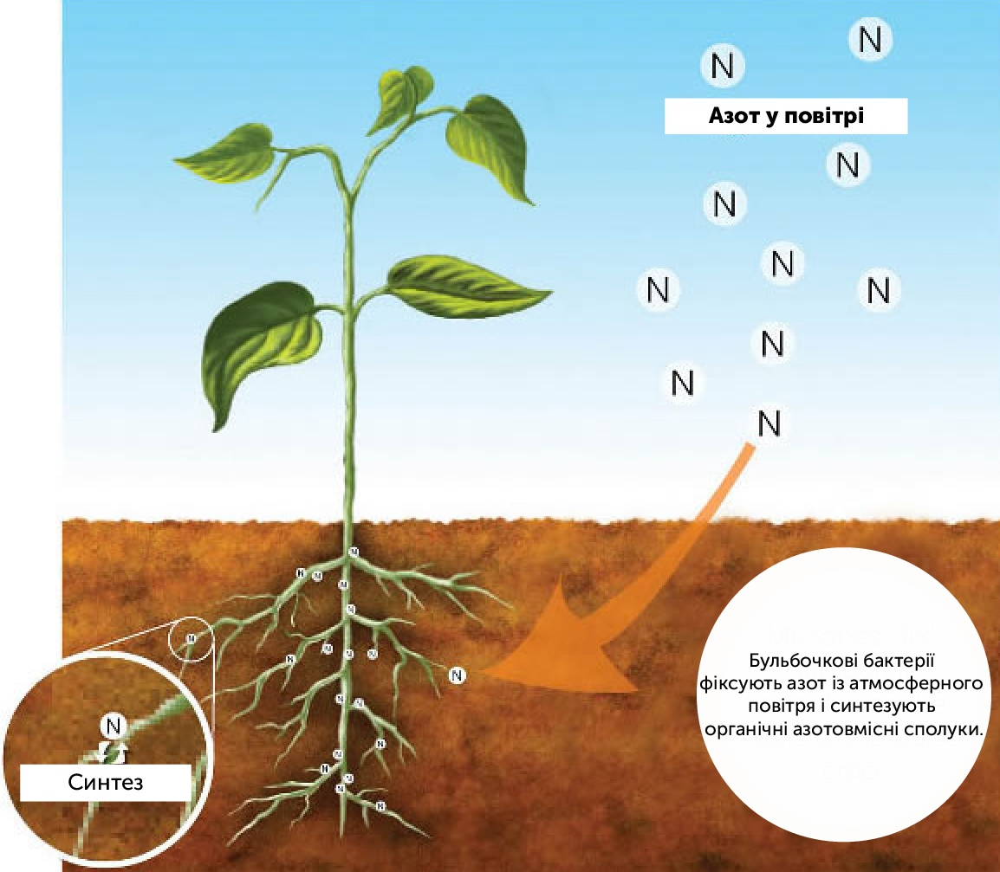

Роль біотехнології у сільскому господарстві
Біотехнологія у сільському господарстві полегшує традиційні методи селекції рослин і тварин і розробляє нові технології, що дозволяють підвищити ефективність сільського господарства. У багатьох країнах методами генетичної і клітинної інженерії створені високопродуктивні і стійкі до шкідників, хвороб, гербіцидів сорти сільськогосподарських рослин. Розроблена техніка оздоровлення рослин від накопичених інфекцій, що особливо важливо для культур, які розмножуються вегетативно (картопля й ін.). Як одна з найважливіших проблем біотехнології в усьому світі, дослідження можливості керування процесом азотфіксації, зокрема можливість уведення генів азотфіксації у геном корисних рослин, а також процесом фотосинтезу. Досліджується поліпшення амінокислотного складу рослинних білків. Розробляються нові регулятори росту рослин, мікробіологічні засоби захисту рослин від хвороб і шкідників, бактеріальні добрива. Генно-інженерні вакцини, сироватки, моноклональні антитіла використовують для профілактики, діагностики і терапії основних хвороб у тваринництві. У створенні ефективніших технологій племінної справи застосовують генно-інженерний гормон росту, а також техніку трансплантації і мікроманіпуляцій на ембріонах домашніх тварин. Для підвищення продуктивності тварин використовують кормовий білок, отриманий мікробіологічним синтезом.
Роль біотехнології в підвищенні біопродуктивності грунту
Ефективність cучасних сільськогосподарських технологій у виробництві продуктів харчування залежить від багатьох чинників, включаючи еколого-географічні, економічні, наявності поновлюваних біологічних ресурсів (культурні рослини, домашні тварини, мікроорганізми.) Підвищення біологічної продуктивності в сільському господарстві є предметом комплексних досліджень різних біологічних наук. Біотехнологічні методи традиційно використовуються в сільському господарстві для підвищення родючості грунтів, боротьби із шкідниками та збудниками хвороб культурних рослин і тварин, виробництва продуктів харчування, їх консервації і покращення якісних показників. В даний час перспективними є створення і впровадження у виробництво нових сортів сільськогосподарських культур з використанням новітніх методів біотехнології – клітинної і генетичної інженерії. Зусилля біотехнологів спрямовані на збільшення виробництва сільськогосподарської продукції і підвищення її якісних показників, стійкості культурних рослин до несприятливих умов зовнішнього середовища, патогенів і шкідників. При цьо-му залишається актуальною проблема підтримки різномаїтості серед культивованих видів і зберігання генетичних ресурсів в цілому. Для сільськогосподарського виробництва промислово випускаються: бактеріальні добрива; ентомопатогенні препарати(ті, що вражають комах); антибіотики. Мікроорганізми відіграють значну роль в підвищенні родючості грунту, оскільки в процесі росту і розвитку рослин покращують структуру, збагачуючи його елементами жи-влення, сприяють кращому використанню добрив.
Із виділенням культури симбіотичних бактерій роду Rhizobium і встановлення їх ролі в фіксації атмосферного азоту, розпочалися наукові дослідження по практичному використанні препаратів в технологічному процесі при вирощуванні сільськогосподарських культур, розробляються способи внесення в грунт, інокуляція насіння. Як показали подальші дослідження витрати на їх виробництво та застосування невеликі, техніка використання проста, а ефективність від застосування значна. Технологія отримання азотних біодобрив базується на використанні грунту після ви-рощування на ній бобових рослин. Цей метод розроблений в кінці XIX століття та застосовується і в даний час. Його недолік – необхідність переміщення достатньо великих об'ємів грунту (100–1000 кг/га), а також можливість поширення хвороб. Більш ефективним - застосування для інокуляції насіння спеціальних препаратів азотфіксуючих бактерій.
Інокуляція— це процес нанесення на насіння препаратів, які
містять бульбочкові бактерії, що сприяють утворенню азотфіксуючих
бульбочок на корінні рослини. Особливість азотного живлення бобових
культур полягає в тому, що вони здатні вступати в симбіоз із
бульбочковими бактеріями, внаслідок чого рослина засвоює азот
повітря. Бульбочкові бактерії проникаючи через кореневі волоски в
кореневу систему, розпочинають інтенсивно ділитися, утворюючи
бульбочки.
В даний час для підтримки життєздатності симбіотичних азотфіксуючих бактерій використовують різноманітні субстрати, серед яких кращим вважається торф. Сухі препарати азотфіксаторів, виготовлені на основі бульбочкових бактерій роду Rhizobium призначені для підвищення врожайності бобових рослин (гороху, квасолі, сої, конюшини, люцерни, люпину) і випускаються під різними марками. Найпоширенішими бактеріальними препаратами на основі асоціативних азотфіксуючих мікроорганізмів є:
- Азогран ( Інститут мікробіології і вірусології ім. Д.К. Заболотного НАНУ) - бактеріальне добриво під овочеві культури відкритого та закритого грунту, буряки цукрові та кормові культури. Випускається в гранульованій формі. Обробка насіння або розсади гарантує захист рослин від фітопатогенів, покращення азотного живлення, підвищення врожаю на 10-25% при поліпшенні якості продукції: вміст вітаміну С зростає в огірках на 20-100%, в капусті на 50-80%. Цукристість підвищується в помідорах на 5-35%, в капусті - 8-10%, в буряках цукрових – на 0,5-0,9%. Норма витрат 100-300 г(мг)/га.
-
Нітрагін (ризоторфін, торф’яний нітрагін) - простерилізований
збагачений бульбочковими бактеріями грунт або торф. В 1 г має бути
не менше 70 млн. клітин бактерій для люпину, сої і серадели, а для
всіх інших бобових - не менше 300 млн. Термін придатності близько
8-9 місяців. Використовують для бактеризації (інокуляції) насіння.
500 г нітрагіну, розбавляють в 3 л води, обробляючи 100 кг
дрібного насіння, а розбавлених в 1 л - 100 кг крупного насіння.
Його застосування підвищує врожайність зерна люпину на 2,5-3 ц/га,
зеленої маси - на 30-50, зерна гороху - на 2,5-3,5 насіння
еспарцету - на 1,5-2 ц/га, посилює азотне живлення, підвищує вміст
білку в насінні та надземних органах, залишаю-чи в ґрунті
біологічний азот.
Роль генної інженерії в сільскому господарстві
Генетично модифіковані організми (ГМО) є однією з найбільш гаряче обговорюваних екологічних тем і тем продуктів харчування в сучасному світі. За допомогою ГМ-продуктів представляється можливим забезпечити продовольством країни, що страждають від нестачі продовольства. Технології генної інженерії широко застосовуються в сільському господарстві. Рослини з ГМО мають підвищену врожайність і стійкі до шкідників. Генетично модифіковані, або трансгенні, організми створюються за рахунок високих технологій передачі обраного генетичного матеріалу від одного організму до іншого. Мета цього процесу генної інженерії полягає в створенні нових сортів рослин і тварин з вибраними характеристиками. Перевагами генної інженерії в сільському господарстві є: збільшення врожайності, зниження витрат на продукти харчування або лікарську продукцію, зниження потреби в пестицидах, розширення складу поживних речовин та якості харчових продуктів, стійкість до шкідників та хвороб, підвищення продовольчої безпеки, а також медичні пільги для зростаючого світового населення. Більшість культивованих генно-модифікованих організмів мають стійкість до комахшкідників або до гербіцидів. Це значно полегшує культивування, а також знижує витрати на обробку отрутохімікатами.Станом на сьогодні трансформовано близько 140 видів різних рослин. На комерційному ринку в останні роки присутні генетично модифіковані лінії сої, кукурудзи, ріпаку, бавовнику, люцерни, папаї та гарбуза. Світовим лідером у вирощуванні ГМ-рослин протягом усіх років залишаються США, Аргентина, Бразилія, Канада і Китай. Серед країн ЕС найбільша кількість зареєстрованих повідомлень про використання ГМО належить Франції (28 % від загальної кількості по країнам ЕС), Італії (15 %), Іспанії (14 %) та Великобританії (12 %).
Яку роль відіграє азот у рослин
Він є невід'ємною складовою протеїнів, хлорофілу, ферментів та багатьох інших компонентів, необхідних для росту і розвитку рослин. Азот потрібний рослині для накопичення маси як складова білків – будівельних матеріалів, а також для фітогормональної регуляції і роботи ферментів.
